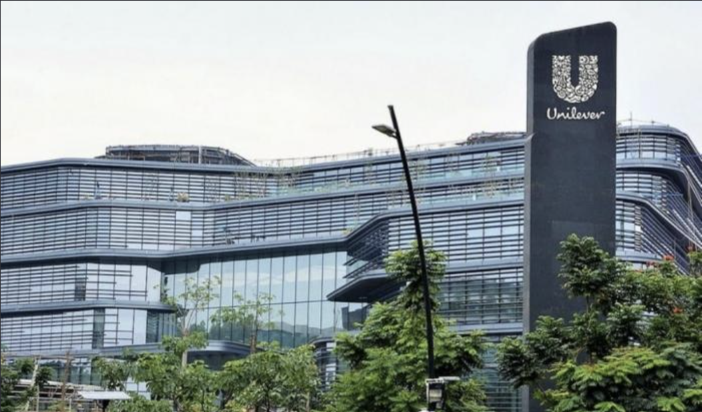
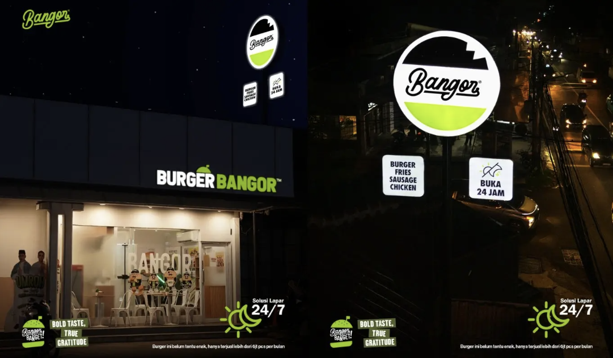

Howdy Fellar😀, I am
Azka Jimmie VirendraWeb Developer Student IDN Boarding School Solo
This portfolio showcases my projects and contributions as a developer in the
technology sector.

About Me


I was born in Surabaya, but I lived and grew up on an island nicknamed the "Mexico of Indonesia"(Madura). My hobbies are drawing, reading, and sports. My favorite food is "martabak telur" (savory egg-filled pancake).
Portfolio


Here are some portfolio projects I’ve created during my first month and a half of learning web development. I’ve covered the basics of HTML and CSS, as well as how to deploy websites to the public using Vercel.
Education


I'm student at IDN Boarding School Solo, where I studied programming, database management, and web development. I also participated in school activities that hadn't existed before, such as IDN Tangguh, Backpacker, and so on.
Experience


My experience includes participating in the production of the latest vehicle model at Astra Daihatsu. I have also contributed to distributing donations to Palestine, an experience through which I embraced the values of kindness and helping others.
Blog
 At Bank Danamon, I was entrusted with developing their official website, where I was responsible for the design, data security, and user experience for visitors. I was facing challenges regarding user security, so I asked some friends who are experts in network engineering for help. They were happy to assist me with the development of the Bank Danamon website.
At Bank Danamon, I was entrusted with developing their official website, where I was responsible for the design, data security, and user experience for visitors. I was facing challenges regarding user security, so I asked some friends who are experts in network engineering for help. They were happy to assist me with the development of the Bank Danamon website.

After completing a two-year internship at Danamon, I received a job offer from Unilever Indonesia, which I happily accepted two weeks later. I received positive feedback during my time there for contributions such as developing the official website and managing corporate ownership matters. I also strengthened my professional relationships, particularly with international colleagues.
A friend offered me an internship at Bangor Berkembang Bersama (Burger Bangor). Two weeks later, I accepted the offer and took on the role of developing their official website. I designed a food delivery system that allowed customers to order burgers directly through the site without leaving their homes, and I also implemented worthwhile promotions for customers using available vouchers.
Contact
Holler at me !


Educational background